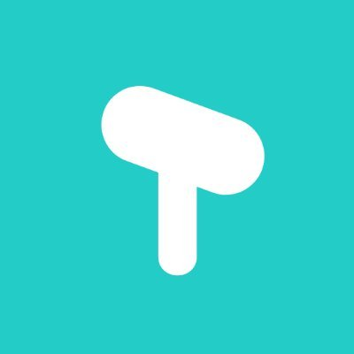

Un podcatchers diferente para Android Open Source Visita https://github.com/stonega/tsacdop. Instálalo en https://play.google.com/store/apps/details?id=com.stonegate.tsacdop o https://f-droid.org/packages/com.stonegate.tsacdop/.
Mira este video para ver un poco el funcionamiento:
Publicado por Angel el viernes 19 febrero del 2021
También te puede interesar:
Powered by org-bash-podcast
Writing in orgmode whith emacs

Este obra está bajo una licencia de Creative Commons Reconocimiento-NoComercial-CompartirIgual 4.0 Internacional.